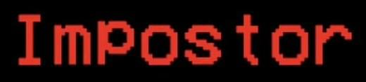
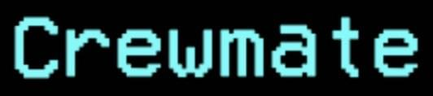

Among Us
 Among Us(с англ. — «Среди нас»)
Among Us(с англ. — «Среди нас») — это многопользовательская компьютерная игра, которая была разработана американской игровой студией Innersloth, а затем выпущена под iOS, Android в июне 2018 года, а под Windows в ноябре 2018 года. В декабре 2020 года игра стала доступна на Nintendo Switch, в будущем планируется поддержка PlayStation 4, PlayStation 5, Xbox One, а также Xbox Series X/S.
Игра была вдохновлена командной ролевой игрой «Мафия» с детективным сюжетом, а также научно-фантастическим фильмом ужасов «Нечто». Игроки случайным образом разделяются на две команды: члены экипажа и скрытые среди них предатели. Члены экипажа не знают, кто из их товарищей предатель, и могут голосованием «казнить» любого персонажа, пытаясь выявить предателей с помощью дедукции. Члены экипажа выигрывают, если им удастся избавиться от предателей или хотя бы довести до завершения все предложенные экипажу задания-головоломки. Если предателям удастся не попадаясь, скрытно убить достаточное количество членов экипажа либо довести до завершения крупную диверсию — например, устроить расплавление в реакторе или прекратить подачу кислорода.
Хотя игра была первоначально выпущена в 2018 году, свою грандиозную популярность она получила лишь в 2020 году из-за того, что в Among Us в то время играло огромное количество известных пользователей сервиса Twitch, а также видеохостинга YouTube. Пандемия COVID-19 также оказала влияние на популярность Among Us. В ноябре 2020 года количество игроков по всему миру составляло около 500 миллионов. Игра получила довольно положительные отзывы критиков. Последние, в свою очередь, оценили игровой процесс, а также сеттинг игры в целом, однако отмечали некоторые технические неисправности. Among Us также получила несколько престижных наград, включая таковую от Golden Joystick Awards в номинации «Прорыв года»; награду от The Game Awards 2020 в номинациях «Лучшая мобильная игра», а также «Лучшая многопользовательская игра». В ответ на популярность оригинальной игры в августе 2020 года был анонсирован сиквел — Among Us 2, однако, запланированное продолжение было отменено уже через месяц. Команда заявила, что сконцентрировала своё внимание на развитии оригинальной игры. На тему Among Us в Сети появилось огромное количество интернет-мемов.
Игровой процесс
Among Us — многопользовательская игра от третьего лица с видом сверху, которая рассчитана на 4—15 человек. Игрок может перемещаться во всех направлениях. В начале игры каждому тайно выдаётся роль предателя или члена экипажа. В каждом раунде до трёх игроков случайным образом выбираются в качестве самозванцев. Раунд может проходить на одной из четырёх карт — на космическом корабле The Skeld, внутри здания штаб-квартиры под названием MIRA HQ, на исследовательской базе под названием Polus, на карте The Airship. Предатель может прятаться в вентиляционном люке, устраивать саботажи. Цель самозванцев заключается либо в убийстве почти всех членов экипажа — если космонавтов осталось столько же, сколько и предателей, то последние побеждают, либо в ликвидации корабля/штаб-квартиры/исследовательской базы/дирижабля путём саботажа. Целью же членов экипажа является выполнение различных заданий-головоломок, выдаваемых в начале игры. Если каждый выполнит все свои задания, то предатели проиграют. Также члены экипажа могут достичь победы путём устранения предателей во время голосования.
В начале игры товарищам по команде назначаются так называемые задания, которые могут быть представлены в форме мини-игр, мини-головоломок и простых переключателей; в основном таковые состоят из работ по техническому обслуживанию жизненно важных систем, как, например, фиксация проводов и загрузка данных. Предателям даётся фальшивый список предлагаемых заданий, которые могут быть использованы для того чтобы слиться с членами экипажа. Однако самозванцы не могут законно выполнять поставленные задачи и могут только делать вид, что выполняют какие-либо поручения на корабле. Впрочем, самозванцы могут: саботировать жизненно важные системы (такие как подача кислорода, карта The Skeld); используя двери, закрывать проходы в отсеки; быстро и незаметно перемещаться, используя систему вентиляции, обычно называемую «вентиляцией»; убивать членов экипажа. Идентифицировать Самозванцев экипажу помогают располагающиеся на каждой карте различные системы наблюдения: камеры видеонаблюдения и административная система, располагающиеся на космическом корабле, карта The Skeld, журнал охраны, расположенный в штаб-квартире, локация MIRA HQ, и индикатор жизненно важных функций, расположенный на исследовательской базе, локация Polus. Члены команды также могут подтвердить свою личность с помощью визуализирующихся заданий — заданий, которые имеют анимацию, воспроизводящуюся только для членов команды; выполнение таковых не может быть сымитировано самозванцами.
На месте убийства остаётся труп. Если какой-либо игрок обнаружил его, он может созвать срочное совещание, на котором в ходе обсуждения члены экипажа вычисляют предателя, а затем голосуют за подозреваемого. Игрок, который получил большее количество голосов, выбрасывается в космос, лаву, скидывается с обрыва или сбрасывается с дирижабля — то есть, погибает, но продолжает игру в виде невидимого призрака, способного продолжать выполнять задания, устраивать саботаж, проходить сквозь стены и наблюдать за происходящим, но не имеющего права голосовать и общаться с другими живыми пользователями. Пользователи имеют право голосовать за кого угодно или вообще не делать этого — в случае, если больше половины не проголосует, никто не выбывает. Если же все предатели будут ликвидированы, то члены экипажа победят. Имеется возможность устроить обсуждение, даже если все игроки живы, однако эта функция имеет лимит использования, а её использование недоступно в случае неисправленной поломки на корабле. Если предатель совершил убийство, то следующее он может сделать только через некоторое время.
Предатели могут время от времени устраивать саботаж: запереть одну из комнат, отключить свет для сужения поля видимости, нарушить систему связи, запустить обратный отсчёт до расплавления в реакторе, столкновения с вертолётом или утечки кислорода. В трёх последних случаях саботаж приведёт к победе предателей, если поломки не будут исправлены за 30 или 50 секунд, что зависит от выбранной локации.
Советы/Гайды
Предатель(Imposter)

1. Действуйте быстро
Тактика «блицкрига» всё еще жива, и до сих пор работает. Так как убить сразу девять членов экипажа будет проблематично, остается действовать в логике саботажа. Нарушить подачу кислорода или запустить процесс разрушения реактора можно уже в самые первые минуты игры – главное, конечно, постарайтесь сделать это без свидетелей. Сбитая с толку команда не всегда успевает отреагировать на такие дерзкие действия.
Вариант рискованный, да, зато он до сих пор работает. Единственное, что может по-настоящему нарушить ваш коварный план – нежеланные спутники или слишком расторопные игроки.
2. Всегда двигайтесь
Несмотря на то, что это позиционное правило, скорее, подходит для шутеров, двигаться в Among Us – это значит всё время расширять свои тактические возможности. Во-первых, движением можно хорошо имитировать бурную деятельность, что важно для Imposter’а. Во-вторых, только двигаясь, вы сможете подловить немало игроков, которым не повезло оказаться с вами один на один.
Более того, смешавшись в толпе во время обнаружения трупа, вы сможете отодвинуть от себя ненужные подозрения. Вашим девизом должна стать фраза: «в нужное время, в нужном месте». В нужное время совершаете убийство, в нужном месте устраиваете саботаж.
3. Выбирайте правильные «задания»
Все знают, что одной из ключевых задач предателя является максимальная мимикрия под обычного члена экипажа. И важная составляющая этого образа – выполнение заданий, которые помогают команде продвигаться к победе.
Однако к некоторым точкам на карте лучше не подходить, ведь там опытные игроки вас быстро вычислят. К таким, например, относятся астероидные пушки в оружейной – в процессе выполнения задания активируется анимация стрельбы. Также не стоит стоять в медпункте у сканера и щитов – они загораются, когда отремонтированы. Впрочем, когда щиты активированы, подходить к ним можно – здесь анимация работает только один раз.
4. Помните про свои возможности
По сравнению с остальной командой предатель является настоящим сверхразумом. Умеет отключать электричество, портить коммуникационную сеть и (даже страшно сказать) закрывать двери! Активное передвижение и безжалостные убийства – это хорошо, но ваш богатый арсенал не только внесёт в игру разнообразие, но и существенно её облегчит.
В заключение хочется отметить важность ситуативных решений и способности к адаптации. Не всегда нужно играть по правилам, даже если это правила прирожденного ассасина. Важнее видеть возможности и не стесняться их реализовывать. Иногда рискованное устранение нерасторопного члена экипажа или яростная поддержка обвинения в чате бывает полезнее тихого терпения.
Также не убивайте в коридорах – это легко вскрывается. Помните, что при выключении света обзор остаётся у игрока на охране. И лично я бы оспорил стопроцентную полезность вентиляции: она не кажется мне абсолютным благом, и у неё неинтуитивная логистика перемещений. Более того, за неосторожное топтание у люков могут вылететь проветриться в космос даже невиновные новички, которым не повезло нарваться на бдительного соратника, что уж говорить про предателей.
Мирный(Crewmate)

1. Будьте внимательнее
Порой даже самый опытный предатель может совершить оплошность, поэтому ни в коем случае не теряйте бдительность. Следите за заданиями, в которых есть анимация, обращайте внимание на вентиляционные люки и, конечно, на странные движения в перемещении ваших соратников.
Ещё лучше, если вы точно знаете, как расположена вентиляционная система и в каком направлении может двигаться потенциальный противник. Возможно, именно тот, кто кажется вам подозрительным, уже готовится зайти за спину вашему напарнику с ножом.
Если стоите на камерах, то следите за парами, которые заходят в другие помещения. Возможно, вы сможете засечь невнимательного предателя.
2. Слушайте свою команду
Этот пункт – прямое продолжение предыдущего. Никогда не участвуйте в коллективной травле и не спешите голосовать «сброс балласта». Возможно, тот человек, которого только что заклеймили, сможет привести реальные доводы своей невиновности, которых вы не услышите, потому что уже махнули на него рукой… Такое же пристальное внимание надо обращать на обвинительные тезисы. Даже, если вы были почти уверены в чьём-то алиби.
Помните, что Among Us в первую очередь – командная игра. Даже, если кажется, что с напарниками вам не повезло, здоровое коллективное обсуждение значительно повысит шансы на победу. Когда речь идёт о воспитании культуры для целой игры, всегда лучше начинать с себя. Чем дольше вы показываете хороший пример, тем больше шансов, что его потом повторят другие.
3. Не оставайтесь в одиночестве
Базовый совет, который никогда не поздно вспомнить. Нахождение в группе, вероятно, обезопасит вас от случайного убийства и поможет сделать больше полезных для команды вещей. Выполнить больше заданий, поучаствовать в большем количестве обсуждений и, в конце концов, выиграть!